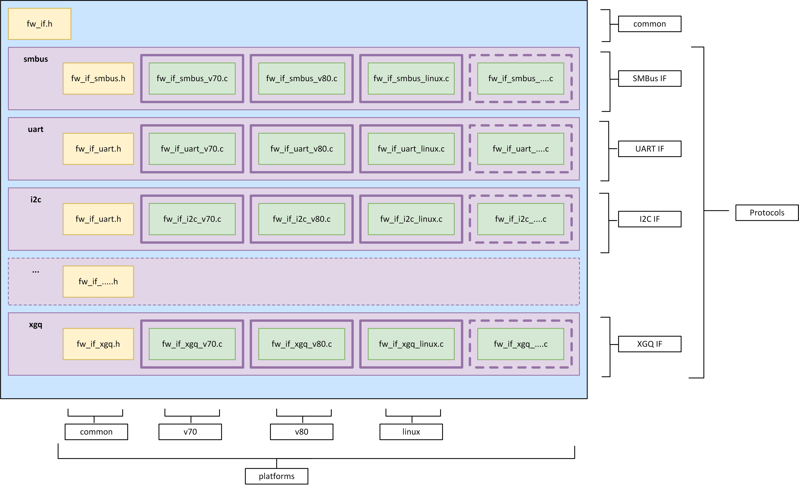

Firmware Interface (FW_IF) Abstraction Layer¶
Overview¶
Firmware Abstraction¶
The Firmware Interface (FW_IF) is an abstraction layer to any driver, providing a common API regardless of the physical interface.
The purpose of this layer is to allow user applications to be developed agnostic of the platform they are to be used on, and (as far as is possible) agnostic of the protocol they are using.
To an extent, this is object oriented (OO) as it allows the user application to treat each interface as an object with public methods.
Terminology¶
| Terminology | Meaning |
|---|---|
| Interface | An abstraction of a data flow device, E.g.
|
| Instance | A C object that provides the API to control a specific port of a driver interface. |
| Common header | fw_if.h - the header file common to all interfaces and instances, agnostic to the protocol or the platform. |
| Common protocol header | fw_if_XXX.h (e.g. fw_if_smbus.h) - the header file specific to a protocol but common to all platform-implementations of that protocol. |
File Structure¶
Note: This is provided as an example only. Individual protocol/hardware names are dependent on implementation.

Top level¶
The top level contains the public header file for the abstraction layer fw_if.h. This provides the generic API common to all interfaces and protocols.
Protocols¶
Each protocol is in a separate directory (e.g. smbus, i2c, etc.).
New protocols get a new directory.
There should never be any overlap or ‘merging’ of protocols. Instead, each should be separated.
Common¶
Within each protocol is the common header file, named fw_if_XXX.h, where “XXX” is the protocol (e.g. fw_if_smbus.h). This is the public header file which is specific to the protocol but agnostic to the platform.
This file provides the API for the init() and create() functions of a protocol, and the protocol-specific configuration structures, enums, and events.
If a system was changing from one protocol to another, this is the only aspect they would have to change their references to.
Implementation¶
Each protocol directory then has the source file for that platform(e.g. v80, linux, etc) and protocol (e.g. fw_if_smbus_amr.c). It should implement the generic API provided in fw_if.h, and the protocol-specific API provided in the common protocol header file (in this example, fw_if_smbus.h).
API¶
Note: The examples shown are from the SMBus implementation of the FW_IF and are for demonstration purposes only. Individual implementations may have been modified since the time of this documentation.
Standard definitions¶
Boolean values
#define FW_IF_TRUE ( 1 )
#define FW_IF_FALSE ( 0 )
Use in place of standard boolean definitions.
Timeout flags
#define FW_IF_TIMEOUT_NO_WAIT ( 0 )
#define FW_IF_TIMEOUT_WAIT_FOREVER ( -1 )
Use for write/read operations if the requested timeout is a non-standard wait.
Errors and return values¶
Function return values and errors are common to all protocols so that a user application may be ported to another driver without requiring any change to return checks or logic.
Return values
/*
* @enum FW_IF_ERRORS
* @brief Return values from an fw_if function
*/
typedef enum _FW_IF_ERRORS
{
FW_IF_ERRORS_NONE = 0, /* no errors, call was successful */
FW_IF_ERRORS_PARAMS, /* invalid parameters passed in to function */
FW_IF_ERRORS_INVALID_HANDLE, /* invalid handle to the fw_if */
FW_IF_ERRORS_INVALID_CFG, /* invalid config in the fw_if */
FW_IF_ERRORS_UNRECOGNISED_OPTION, /* invalid option passed in to ioctrl function */
FW_IF_ERRORS_DRIVER_IN_USE, /* driver was in use by another process */
FW_IF_ERRORS_DRIVER_NOT_INITIALISED, /* driver was not initialised correctly */
FW_IF_ERRORS_DRIVER_RX_MODE, /* driver was requested to operate in a mode with which it is not compatible */
FW_IF_ERRORS_TIMEOUT, /* a non-0 timeout value was requested and expired */
FW_IF_ERRORS_BINDING, /* the callback was not successfully bound in */
FW_IF_ERRORS_OPEN, /* this should cause a driver-specific event to be raised to the bound callback */
FW_IF_ERRORS_CLOSE, /* this should cause a driver-specific event to be raised to the bound callback */
FW_IF_ERRORS_WRITE, /* this should cause a driver-specific event to be raised to the bound callback */
FW_IF_ERRORS_READ, /* this should cause a driver-specific event to be raised to the bound callback */
FW_IF_ERRORS_IOCTRL, /* this should cause a driver-specific event to be raised to the bound callback */
MAX_FW_IF_ERROR,
} FW_IF_ERRORS;
This is not an exhaustive list, however, any additions must take into consideration that they must be available to all protocols.
All FW_IF functions must return the above values as a uint32_t.
Initializing the driver¶
Driver initialization must happen once before an interface instance can be created or used.
The driver initialization is specific to the protocol. Therefore, the initialization function and the configuration structure are defined in the common protocol header.
Within each common protocol header is an “INIT_CONFIG” - a structure used during initialization of the driver but not needed for individual instances of that interface.
Example init config
/*
* @struct FWIfSMBusInitCfg
* @brief config options for smbus initialisation (generic across all smbus interfaces)
*/
typedef struct
{
uint32_t ulBaseAddr;
uint32_t ulBaudRate;
uint8_t pucCommandProtocols[ MAX_FW_IF_SMBUS_COMMAND_PROTOCOL ];
} FWIfSMBusInitCfg;
In this example, baseAddr and baudRate are configuration values that will be required for all implementation’s of an SMBus driver.
If any configuration values aren’t required for a specific implementation, they can be ignored (e.g. the Linux implementation probably won’t need a Base Address value).
Example init function
/*
* @brief initialisation function for smbus interfaces (generic across all smbus interfaces)
*
* @param pxCfg pointer to the config to initialise the driver with
*
* @return See FW_IF_ERRORS
*/
uint32_t ulFW_IF_SMBUS_Init( FWIfSMBusInitCfg *pxCfg );
The initialization function should only pass in a pointer to the initialization structure, so that porting a user application from one driver to another takes minimal effort (only the structure contents and the name of the function need changed).
Note: The user application is responsible for the storage of the configuration structure.
Creating an interface¶
This functionality requires that a driver has been initialized.
As with the driver initialization, interface creation is specific to the protocol and therefore the API is provided in the common protocol header.
Within a driver, there may be multiple instances that can be created and used.
An instance can be thought of as a port or an address on a driver that can be used for a single stream of read/write data (it may be write-only or read-only in practice).
For example, a single SMBus driver might allow up to 7 instances to be created on it. Within the FW_IF, these can be handled as 7 individual and separate interfaces.
Each interface has public methods and private data, held in a config.
FWIfCfg
/*
* @struct FWIfCfg
* @brief Structure to hold a fw_if instance
*/
typedef struct
{
uint32_t upperFirewall;
FW_IF_open *open;
FW_IF_close *close;
FW_IF_write *write;
FW_IF_read *read;
FW_IF_ioctrl *ioctrl;
FW_IF_bindCallback *bindCallback;
FW_IF_callback *raiseEvent;
void *cfg;
uint32_t lowerFirewall;
} FWIfCfg;
Note: The user application is responsible for the storage of the interface structure.
The cfg parameter holds the private data that is passed in during the interface creation.
Within each common protocol header is an “CONFIG” - a structure used during interface creation and throughout any logic that the interface may use in its implementation.
Example interface config
/* additional enums, etc, specific to this interface */
#define FW_IF_SMBUS_UDID_LEN ( 16 )
/*
* @enum FW_IF_SMBUS_ROLE
* @brief Controller or Target
*/
typedef enum
{
FW_IF_SMBUS_ROLE_CONTROLLER = 0,
FW_IF_SMBUS_ROLE_TARGET,
MAX_FW_IF_SMBUS_ROLE
} FW_IF_SMBUS_ROLE;
...
/*
* @struct FWIfSMBusCfg
* @brief config options for smbus interfaces (generic across all smbus interfaces)
*/
typedef struct
{
uint32_t ulPort;
FW_IF_SMBUS_ROLE xRole;
FW_IF_SMBUS_ARP xArpCapability;
FW_IF_SMBUS_PROTOCOL xProtocol;
uint8_t pucUdid[ FW_IF_SMBUS_UDID_LEN ];
FW_IF_SMBUS_STATE xState;
uint8_t ucInstance;
FW_IF_SMBUS_PEC xPecCapability;
} FWIfSMBusCfg;
In this example, port, arpCapable and udid are configuration values that each interface needs to know about itself.
Note: Port is a generic term that can be thought of as simply the ID of an interface. It may be the address or simply an index. In the SMBus example, it would be a Target address.
As before, if any values aren’t required for a specific implementation, they can be ignored.
Example creation function
/*
* @brief creates an instance of the smbus interface
*
* @param pxFwIf fw_if handle to the interface instance
* @param pxSmbusCfg unique data of this instance (port, address, etc)
*
* @return See FW_IF_ERRORS
*/
uint32_t ulFW_IF_SMBUS_Create( FWIfCfg *pxFwIf, FWIfSMBusCfg *pxSmbusCfg );
The parameter *pxFwIf is the handle to the interface that will be used for all subsequent calls (e.g. open, write, etc). It must be initialised in the user application as an empty structure.
The parameter *pxSmbusCfg is a pointer to the instance configuration structure shown previously - within the implementation, the contents will be copied to the private structure of the pxFwIf handle.
Note - the user application is responsible for the storage of the configuration structure.
Opening / Closing an interface¶
This functionality is common to all protocols, and so is provided in the common header.
It requires that a driver has been initialized and an interface has been created on it.
Each implementation source file must provide a local (static) implementation of this function.
FW_IF_open
/*
* @brief Open the specific fw_if
*
* @param pvFwIf Pointer to this fw_if
*
* @return See FW_IF_ERRORS
*/
typedef uint32_t ( FW_IF_open )( void *pvFwIf );
Within the SMBus example, this will create a target device with the values provided in the device creation function.
In another protocol, it may be as simple as setting a flag, or it may be more involved.
FW_IF_close
/*
* @brief Close the specific fw_if
*
* @param pvFwIf Pointer to this fw_if
*
* @return See FW_IF_ERRORS
*/
typedef uint32_t ( FW_IF_close )( void *pvFwIf );
This must close the interface. Within the SMBus example, this will delete the previously created target device.
Writing data from an interface¶
This functionality is common to all protocols, and so is provided in the common header.
It requires that a driver has been initialized and an interface has been created on it.
Once an interface has been opened, outgoing data (Tx) can be written from it.
FW_IF_write
/*
* @brief Writes data from an instance of the specific fw_if
*
* @param pvFwIf Pointer to this fw_if
* @param ullDstPort Remote port to write to
* @param pucData Data buffer to write
* @param ulSize Number of bytes in data buffer
* @param ulTimeoutMs Time (in ms) to wait for write to complete
*
* @return See FW_IF_ERRORS
*/
typedef uint32_t ( FW_IF_write )( void *pvFwIf, uint64_t ullDstPort, uint8_t *pucData, uint32_t ulSize, uint32_t ulTimeoutMs );
For the timeoutMs parameter, the additional #defines may also be used:
FW_IF_TIMEOUT_NO_WAIT - the function will return as soon as the write is attempted, regardless of any delay.
FW_IF_TIMEOUT_WAIT_FOREVER - the function will not return until the write is successful or has failed.
Reading data from an interface¶
This functionality is common to all protocols and so it is provided in the common header.
It requires that a driver has been initialized and an interface has been created on it.
Once an interface has been opened, incoming data (Rx) can be read from it.
FW_IF_read
/*
* @brief Reads data from an instance of the specific fw_if
*
* @param pvFwIf Pointer to this fw_if
* @param ullSrcPort Remote port to read from
* @param pucData Data buffer to read
* @param pulSize Pointer to maximum number of bytes allowed in data buffer
* This value is updated to the actual number of bytes read
* @param ulTimeoutMs Time (in ms) to wait for read to complete
*
* @return See FW_IF_ERRORS
*/
typedef uint32_t ( FW_IF_read )( void *pvFwIf, uint64_t ullSrcPort, uint8_t *pucData, uint32_t *pulSize, uint32_t ulTimeoutMs );
For the timeoutMs parameter, the additional #defines may also be used:
FW_IF_TIMEOUT_NO_WAIT - the function will return as soon as the write is attempted, regardless of any delay.
FW_IF_TIMEOUT_WAIT_FOREVER - the function will not return until the write is successful or has failed.
This function is best called in an Rx task loop. If the user application does not want to use a task to pend on incoming data and wants real-time data, it is advised to use the callbacks method instead. However, if an implementation is designed to only use interrupt-based Rx’ing, it limits moving between alternative implementation, as needed.
To determine if a FW_IF implementation provides polling and/or event-driven Rx data, see the IO CTRL “FW_IF_COMMON_IOCTRL_GET_RX_MODE” option.
Binding callbacks¶
This functionality is common to all protocols, and so is provided in the common header.
It requires that a driver has been initialized and an interface has been created on it.
The common header provides some generic events that are usable by all protocols:
Example events
/*
* @enum FW_IF_COMMON_EVENTS
* @brief common events raised in the callback (generic across all interfaces)
*/
typedef enum _FW_IF_COMMON_EVENTS
{
FW_IF_COMMON_EVENT_NEW_RX_DATA,
FW_IF_COMMON_EVENT_NEW_TX_COMPLETE,
FW_IF_COMMON_EVENT_WARNING,
FW_IF_COMMON_EVENT_ERROR,
MAX_FW_IF_COMMON_EVENT
} FW_IF_COMMON_EVENTS;
Each protocol provides specific events - these are specific to the protocol and so are provided in the common protocol header. They must begin with the value of MAX_FW_IF_COMMON_EVENT.
Example events
/*
* @enum FW_IF_SMBUS_EVENTS
* @brief smbus events raised in the callback (generic across all smbus interface)
*/
typedef enum _FW_IF_SMBUS_EVENTS
{
FW_IF_SMBUS_EVENT_ADDRESS_CHANGE = MAX_FW_IF_COMMON_EVENT,
MAX_FW_IF_SMBUS_EVENT
} FW_IF_SMBUS_EVENTS;
The maximum allowed value of an event is 0xFFFF.
Events are raised through a pre-defined callback.
FW_IF_callback
/*
* @brief Callback to raise to calling layer
*
* @param usEventId Unique ID to identify the event
* @param pucData Pointer to data buffer
* @param ulSize Number of bytes in data
*
* @return See FW_IF_ERRORS
*/
typedef uint32_t ( FW_IF_callback )( uint16_t usEventId, uint8_t *pucData, uint32_t ulSize );
If a user application wishes to receive real-time events from an interface, they must implement the above function.
A different function can be implemented per interface, or a common function can be used for all of them if the interface itself is not important (e.g. the application only cares about the data or the eventId itself).
The eventId parameter must be one of the values defined in the previously shown event enum.
If a user application does not want to use a task to pend on incoming data and wants real-time data, it can use the NEW_RX_DATA event to receive data whenever it is received by the underlying interface. For this to be possible, each implementation must call the raiseEvent() callback in the *fw_if handle upon receiving new data.
For example, each target device created has its own callback that is triggered when new data is received for the SMBus driver implementation. That callback would in turn call the raiseEvent callback associated with the interface instance of that target address, with the eventID set to FW_IF_SMBUS_EVENT_NEW_RX_DATA.
The above callback must be bound to interface instance before it can be triggered.
FW_IF_bindCallback
/*
* @brief Binds a user-defined callback into the fw_if
*
* @param pvFwIf Pointer to this fw_if
* @param pxNewFunc Function pointer to call
*
* @return See FW_IF_ERRORS
*/
typedef uint32_t ( FW_IF_bindCallback )( void *pvFwIf, FW_IF_callback *pxNewFunc );
A user does not need to bind a callback if they do not need one.
IO Ctrl¶
This functionality is common to all protocols, and so is provided in the common header.
It requires that a driver has been initialized and an interface has been created on it.
There is some IO ctrl that is common to all protocols, and so is defined the common header.
FW_IF_COMMON_IOCTRL_OPTIONS
/*
* @enum FW_IF_DRIVER_RX_MODE
* @brief Mode of Rx operation
*/
typedef enum
{
FW_IF_RX_MODE_POLLING = 0x01, /* driver must be polled for new data */
FW_IF_RX_MODE_EVENT = 0x02, /* driver will raise an event to announce new data */
} FW_IF_DRIVER_RX_MODE;
/*
* @enum FW_IF_COMMON_IOCTRL_OPTIONS
* @brief IO ctrl options common to all fw_ifs
*/
typedef enum _FW_IF_COMMON_IOCTRL_OPTIONS
{
FW_IF_COMMON_IOCTRL_FLUSH_TX = 0,
FW_IF_COMMON_IOCTRL_FLUSH_RX,
FW_IF_COMMON_IOCTRL_GET_RX_MODE,
FW_IF_COMMON_IOCTRL_ENABLE_DEBUG_PRINT,
FW_IF_COMMON_IOCTRL_DISABLE_DEBUG_PRINT,
MAX_FW_IF_COMMON_IOCTRL_OPTION
} FW_IF_COMMON_IOCTRL_OPTIONS;
FW_IF_COMMON_IOCTRL_FLUSH_TX : clears any data currently in the Tx buffer.
FW_IF_COMMON_IOCTRL_FLUSH_RX : clears any data currently in the Rx buffer.
FW_IF_COMMON_IOCTRL_GET_RX_MODE : returns the implementation’s FW_IF_RX_MODE (polling, event-driven, or both) as a uint8_t with bit-flags.
FW_IF_COMMON_IOCTRL_ENABLE_DEBUG_PRINT : enable debug print
FW_IF_COMMON_IOCTRL_DISABLE_DEBUG_PRINT : disable debug print
Additional IO Ctrl options for a specific protocol can then be provided in the common protocol header.
Example protocol IO Ctrl options
/*
* @enum FW_IF_SMBUS_IOCTRL_OPTION
* @brief ioctrl options for smbus interfaces (generic across all smbus interfaces)
*/
typedef enum _FW_IF_SMBUS_IOCTRL_OPTIONS
{
FW_IF_SMBUS_IOCTRL_SET_CONTROLLER = MAX_FW_IF_COMMON_IOCTRL_OPTION,
FW_IF_SMBUS_IOCTRL_SET_TARGET,
MAX_FW_IF_SMBUS_IOCTRL_OPTION
} FW_IF_SMBUS_IOCTRL_OPTIONS;
Note: The first protocol-specific IO option must always be set to MAX_FW_IF_COMMON_IOCTRL_OPTION.
The user application can then set an option (and pass an associated value, if necessary).
FW_IF_ioctrl
/*
* @brief Set/get specific IO options to/from the specific fw_if
*
* @param pvFwIf Pointer to this fw_if
* @param ulOption Unique IO Ctrl option to set/get
* @param pvValue Pointer to value to set/get
*
* @return See FW_IF_ERRORS
*/
typedef uint32_t ( FW_IF_ioctrl )( void *pvFwIf, uint32_t ulOption, void *pvValue );
The parameter option must be an enum value from either the common list or the protocol specific list.
The parameter value can be NULL if no value is required for the option. This parameter allows the user application to set or get data from an interface.
For the common IOCTRL options “FW_IF_COMMON_IOCTRL_GET_RX_MODE”, this value will be a uint8_t with the appropriate FW_IF_RX_MODE flags set.
Note: To avoid losing the benefits of the firmware abstraction, the user application should keep IO Ctrl calls to a minimum.
Examples¶
Unless otherwise stated, each example shown here uses the V80 SMBus driver implementation.
Initialising the driver¶
This function should only be called once. Drivers should be developed to cater for this, either with an API that returns the initialization status or by returning a recognizable return code if a user attempts to initialize the driver a 2nd time.
Driver initialise example
FWIfSMBusInitCfg mySmbusIf =
{
.ulBaseAddr = 0x12345678,
.ulBaudRate = 100000,
.pucCommandProtocols = { 0 }
};
if( FW_IF_ERRORS_NONE == ulFW_IF_SMBUS_Init( &mySmbusIf ) )
{
printf( "SMBus initialised OK\r\n" );
}
else
{
printf( "Error initialising SMBus\r\n" );
}
Within the ulFW_IF_SMBUS_Init() function, the implementation:
Checks if the driver has not already been initialized.
Takes a local copy of the FWIfSMBusInitCfg structure (it only needs one local copy, so no dynamic memory allocation is required).
Calls the driver-specific initialization function.
Creating an interface instance¶
Interface creation example
static FWIfCfg myIf = { 0 }; /* always initialised as empty */
static FWIfCfg *pIf = &myIf; /* not necessary, but it's helpful to consider the FW_IF as a handle, not a struct */
static FWIfSMBusCfg cfg =
{
.ulPort = 0x56,
.xRole = FW_IF_SMBUS_ROLE_CONTROLLER,
.pucUdid = { 0x11, 0x00, /* ... */ }
};
...
if( FW_IF_ERRORS_NONE == ulFW_IF_SMBUS_Create( pIf, &cfg ) )
{
printf( "SMBus %02X created OK\r\n", cfg.ulPort );
}
else
{
printf( "Error creating SMBus %02X\r\n", cfg.ulPort );
}
Within the ulFW_IF_SMBUS_Create() function, the implementation:
Sanity checks the config.
Populates the variables within FWIfCfg parameter with the local implementation functions.
Copies the contents of the FWIfSMBusCfg to the private data area of the handle.
Interface creation example implementation
uint32_t ulFW_IF_SMBUS_Create( FWIfCfg *pxFwIf, FWIfSMBusCfg *pxSmbusCfg )
{
uint32_t status = FW_IF_ERRORS_NONE;
if( ( NULL != pxFwIf ) && ( NULL != pxSmbusCfg ) )
{
if( ( MAX_FW_IF_SMBUS_ROLE > pxSmbusCfg->xRole ) && ( NULL != pxSmbusCfg->pucUdid ) )
{
FWIfCfg myLocalIf =
{
.upperFirewall = SMBUS_UPPER_FIREWALL,
.open = &smbusOpen,
.close = &smbusClose,
.write = &smbusWrite,
.read = &smbusRead,
.ioctrl = &smbusIoctrl,
.bindCallback = &smbusBindCallback,
.cfg = ( void* )pxSmbusCfg,
.lowerFirewall = SMBUS_LOWER_FIREWALL
};
memcpy( pxFwIf, &myLocalIf, sizeof( FWIfCfg ) );
FWIfSMBusCfg *thisSmbusCfg = ( FWIfSMBusCfg* )pxFwIf->cfg;
printf( "smbus_create for port %u\r\n", thisSmbusCfg->ulPort );
}
else
{
status = FW_IF_ERRORS_INVALID_CFG;
}
}
else
{
status = FW_IF_ERRORS_PARAMS;
}
return status;
}
Opening / Closing an interface¶
Once created, the public methods of the FW_IF_CFG instance can be called without needing to know about the underlying functionality.
Interface open example
if( FW_IF_ERRORS_NONE == pIf->open( pIf ) )
{
printf( "SMBus opened OK\r\n" );
}
else
{
printf( "Error opening SMBus\r\n" );
}
Within the FW_IF_open implementation, the function:
Checks if the driver is initialized.
Creates a target device on the SMBus with the address set to the ulPort variable in the FWIfSMBusCfg structure (pointed to by the *cfg pointer in the FWIfCfg handle).
To close:
Interface close example
if( FW_IF_ERRORS_NONE == pIf->close( pIf ) )
{
printf( "SMBus closed OK\r\n" );
}
else
{
printf( "Error closing SMBus\r\n" );
}
Within the FW_IF_open implementation, the function:
Checks if the driver is initialized.
Destroys the target device on the SMBus that it created in the FW_IF_open function.
Writing data from an interface¶
Interface write example
#define TEST_DATA_SIZE ( 64 )
static uint8_t txData[ TEST_DATA_SIZE ] = { 0 };
if( FW_IF_ERRORS_NONE == pIf->write( pIf, 0x56, txData, 32, FW_IF_TIMEOUT_NO_WAIT ) )
{
printf( "SMBus data written OK\r\n" );
}
else
{
printf( "Error writing from SMBus\r\n" );
}
Within the FW_IF_write implementation, the function:
Checks if the driver is initialized.
If operating as a Controller:
Uses the size parameter to determine which SMBus protocol command to use.
Initiates an SMBus Controller command write command.
If operating as a Target:
Loads the data and size into the readCallback that will be triggered if a remote Controller sends a read command to the interface.
Reading data from an interface¶
Interface read example
#define TEST_DATA_SIZE ( 64 )
static uint8_t rxData[ TEST_DATA_SIZE ] = { 0 };
static uint32_t rxSize = TEST_DATA_SIZE;
if( FW_IF_ERRORS_NONE == pIf->read( pIf, 0x57, rxData, &rxSize, 50 ) )
{
printf( "SMBus data read OK\r\n" );
}
else
{
printf( "Error reading from SMBus\r\n" );
}
Within the FW_IF_read implementation, the function:
Checks if the driver is initialized.
If operating as a Controller:
Uses the *size parameter to determine which SMBus protocol command to use.
Initiates an SMBus Controller read command.
Waits timeoutMs (in this example, 50ms) and then (if data has been received in that timeframe) loads the received data into the data parameter and the number of bytes read into the *size parameter.
If operating as a Target:
Waits timeoutMs (in this example, 50ms) for writeCallback to be triggered (if a remote Controller sends a write command to the interface) and loads the data and size in it into the data and *size parameters.
If the user doesn’t want to wait for the response and simply wants to trigger a read, they can call the read() function with the timeoutMs set to FW_IF_TIMEOUT_NO_WAIT and use the bound callback to trigger with new data.
IO Ctrl¶
Interface ioctrl example
if( FW_IF_ERRORS_NONE == pIf->ioctrl( pIf, FW_IF_SMBUS_IOCTRL_SET_TARGET, NULL ) )
{
printf( "SMBus ioctrl OK\r\n" );
}
else
{
printf( "Error ioctrl SMBus\r\n" );
}
Within the FW_IF_write implementation, the function:
Checks if the driver is initialised.
Checks if the option variable (in this case, FW_IF_SMBUS_SET_TARGET) is a valid option.
Handles it accordingly.
Interface ioctrl example implementation
static uint32_t smbusIoctrl( void *pvFwIf, uint32_t ulOption, void *pvValue )
{
uint32_t status = FW_IF_ERRORS_NONE;
FWIfCfg *thisIf = ( FWIfCfg* )pvFwIf;
FWIfSMBusCfg *thisSmbusCfg = ( FWIfSMBusCfg* )thisIf->cfg;
switch( ulOption )
{
case FW_IF_SMBUS_IOCTRL_SET_CONTROLLER:
iIsController = FW_IF_TRUE;
break;
case FW_IF_SMBUS_IOCTRL_SET_TARGET:
iIsController = FW_IF_FALSE;
break;
default:
status = FW_IF_ERRORS_UNRECOGNISED_OPTION;
break;
}
printf( "smbus_ioctrl for port %u (option %u)\r\n", thisSmbusCfg->ulPort, ulOption );
return status;
}
For options requiring passing in additional variables or retrieving data, the parameter *value can be used.
Callbacks and Binding¶
The user application must implement its own version of the FW_IF_callback function.
Interface FW_IF_callback example
uint32_t myLocalFunc( uint16_t usEventId, uint8_t *pucData, uint32_t ulSize )
{
uint32_t status = FW_IF_ERRORS_NONE;
int i = 0;
printf( "Callback called: %u\r\n", usEventId );
switch( usEventId )
{
case FW_IF_SMBUS_EVENT_NEW_RX_DATA:
printf( "New data arrived (%u bytes(s))\r\n", ulSize );
if( ( FW_IF_SMBUS_MAX_DATA >= ulSize ) && ( NULL != pucData ) )
{
for( i = 0; i < ulSize; i++ )
{
printf( "Data[%02d] : %02d\r\n", i, pucData[i] );
}
}
else
{
printf( "Invalid size\r\n" );
status = FW_IF_ERRORS_PARAMS;
}
break;
case FW_IF_SMBUS_EVENT_TX_COMPLETE:
printf( "Data successfully tx'd\r\n");
break;
case FW_IF_SMBUS_EVENT_ADDRESS_CHANGE:
if( NULL != pucData )
{
printf( "Port ID changed to 0x%02X\r\n", *( uint32_t* )pucData );
}
else
{
status = FW_IF_ERRORS_PARAMS;
}
break;
case FW_IF_SMBUS_EVENT_WARNING:
/* Handle warning */
break;
case FW_IF_SMBUS_EVENT_ERROR:
/* Handle error */
break;
default:
break;
}
return status;
}
Then, the user application binds the callback into the FW_IF handle.
Interface FW_IF_bindCallback example
if( FW_IF_ERRORS_NONE == pIf1->bindCallback( pIf1, &myLocalFunc ) )
{
printf( "SMBus callback bound OK\r\n" );
}
else
{
printf( "Error binding SMBus callback\r\n" );
}
Within the FW_IF_bindCallback implementation, the function stores the function pointer as the raiseEvent variable in the FWIfCfg handle.
Interface FW_IF_bindCallback example
static uint32_t smbusBindCallback( void *pvFwIf, FW_IF_callback *pxNewFunc )
{
uint32_t status = FW_IF_ERRORS_NONE;
FWIfCfg *thisIf = ( FWIfCfg* )pvFwIf;
if( NULL != pxNewFunc )
{
FWIfSMBusCfg *thisSmbusCfg = ( FWIfSMBusCfg* )thisIf->cfg;
thisIf->raiseEvent = pxNewFunc;
printf( "smbusBindCallback called for port %u\r\n", thisSmbusCfg->ulPort );
}
else
{
status = FW_IF_ERRORS_PARAMS;
}
return status;
}
Now, at specific places in the implementation, the raiseEvent() can be called with any relevant data for the appropriate event.
Interface FW_IF_bindCallback example
/* E.g. in the callback trigger by an SMBus receiving data */
...
if( NULL != thisIf->raiseEvent )
{
thisIf->raiseEvent( FW_IF_SMBUS_EVENT_NEW_RX_DATA, &dataBuffer, bufferSize );
}
...
if( FW_IF_TRUE == thereIsAnError )
{
thisIf->raiseEvent( FW_IF_SMBUS_EVENT_ERROR, NULL, 0 );
}
...
Some local caching may be required if the FWIfCfg handle is not in context at the time of raising the event as each handle is associated with a specific port/address.